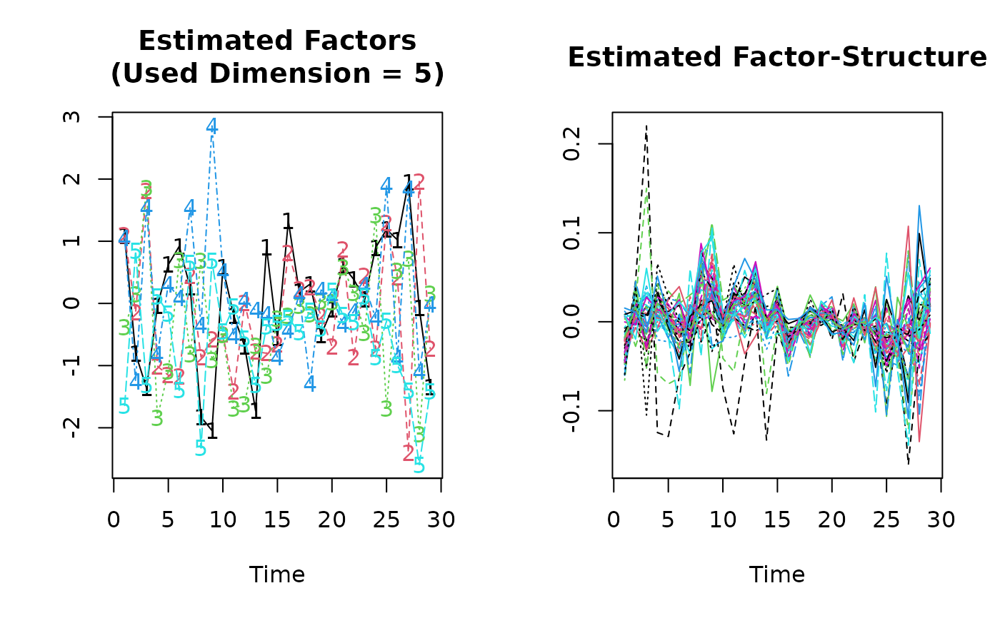

Eup-Routine
Eup.RdEstimation of Panel Data Models with Interactive Fixed Effects.
Usage
Eup(formula,
additive.effects = c("none", "individual", "time", "twoways"),
dim.criterion = c("PC1", "PC2", "PC3", "BIC3","IC1", "IC2" , "IC3",
"IPC1", "IPC2", "IPC3"),
d.max = NULL,
sig2.hat = NULL,
factor.dim = NULL,
double.iteration = TRUE,
start.beta = NULL,
max.iteration = 500,
convergence = 1e-6,
restrict.mode = c("restrict.factors", "restrict.loadings"),
...)Arguments
- formula
An object of class 'formula' where the arguments are matrices. The number of rows has to be equal to the temporal dimension and the number of columns has to be equal to the number of individuals. The details of model specification are given under 'Details'.
- additive.effects
Type of Data Transformations:
"none": for no transformation"individual": for within transformation"time": for between transformation"twoways": for twoways transformation
- dim.criterion
The dimensionality criterion to be used if
factor.dimis left unspecified. The default criterion is"PC1"
.
- d.max
Maximal dimension used in the dimensionality-criteria of Bai (2009). The default (
d.max=NULL) yields to an internal selection of d.max.- sig2.hat
The squared standard deviation of the error-term required for the computation of some dimensionality criteria. The user can specify it in instead of
d.max. The default (sig2.hat=NULL) yields to an internal estimation.- factor.dim
Dimension of Factor-Structure, pre-specified by the user. The default (
factor.dim=NULL) yields to an internal estimation.- double.iteration
logical. If
FALSEthe update of the factor dimensiondwill be done simultaneously with remaining model parameters without alternating between inner and outer iteration. This may speed up computations, but the convergence is less stable than in the default setting.- start.beta
allows the user to give a vector of starting values for the slope parameters.
- max.iteration
controls the maximum number of iterations. The default is '500'.
- convergence
Convergence condition of the estimators. The default is '1e-6'.
- restrict.mode
Type of Restriction on the Factor-Structure:
"restrict.factors": Factors are restricted to have an euclidean norm of 1."restrict.loadings": Factor-Loadings are restricted to have an euclidean norm of 1.
- ...
Additional arguments to be passed to the low level functions.
Details
'Eup' is a function to estimate equidistant panel data models with unobserved multiple time varying individual effects. The considered model is given by \($Y_{it}= \sum_{j=1}^P\beta_{j} X_{itj}+ v_{it} + \epsilon_{it}\quad i=1,\dots,n; t=1,\dots,T.$\) Where the individual time trends, v_it, are assumed to come from a finite dimensional factor model: \($v_{it}=\sum_{l=1}^d\lambda_{il}f_{lt},\quad \lambda_{il}, f_{lt} \in R.$\)
formulaUsual 'formula'-object. If you wish to estimate a model without an intercept use '-1' in the formula-specification. Each Variable has to be given as a TxN-matrix. Missing values are not allowed.additive.effects"none": The data is not transformed, except for a subtraction of the overall mean, if the model is estimated with an intercept. The assumed model can be written as \($Y_{it}= \mu + \sum_{j=1}^P\beta_{j} X_{itj}+v_{it}+\epsilon_{it}\quad i=1,\dots,n; t=1,\dots,T.$\) The parameter 'mu' is set to zero if '-1' is used informula."individual": This is the "within"-model, which assumes that there are time-constant individual effects, alpha_i, besides the individual time trends v_it. The model can be written as \($Y_{it}= \mu +\alpha_{i} + \sum_{j=1}^P\beta_{j} X_{itj}+v _{it} + \epsilon_{it} \quad i=1,\dots,n; t=1,\dots,T.$\) The parameter 'mu' is set to zero if '-1' is used informula."time": This is the "between"-model, which assumes that there is a common time trend (for all individuals), theta_t. The model can be written as \($Y_{it}=\mu+ \theta_t + \sum_{j=1}^P\beta_{j} X_{itj}+v_i(t)+\epsilon_{it}\quad i=1,\dots,n; t=1,\dots,T.$\) The parameter 'mu' is set to zero if '-1' is used informula."twoways": This is the "twoways"-model ("within" & "between"), which assumes that there are time-constant individual effects, alpha_i, and a common time trend, theta_t. The model can be written as \($Y_{it}=\mu+ \alpha_{i} + \theta_t +\sum_{j=1}^P\beta_{j} X_{itj}+\tau_i+v_i(t)+\epsilon_{it}\quad i=1,\dots,n; t=1,\dots,T.$\) The parameter 'mu' is set to zero if '-1' is used informula.
Inferences about the slope parameters can be obtained by using the method summary(). The type of correlation and heteroskedasticity in the idiosyncratic errors can be specified by
choosing the corresponding number for the argument error.type = c(1, 2, 3, 4, 5, 6, 7, 8) in summary(), where
1: indicates the presence of i.i.d. errors,2: indicates the presence of cross-section heteroskedasticity with \($n/T \to 0$\),3: indicates the presence of cross-section correlation and heteroskedasticity with \($n/T \to 0$\),4: indicates the presence of heteroskedasticity in the time dimension with \($T/n \to 0$\),5: indicates the presence of correlation and heteroskedasticity in the time dimension with \($T/n \to 0$\),6: indicates the presence of both time and cross-section dimensions with \($T/n^2 \to$\) and \($n/T^2 \to 0$\),7: indicates the presence of both time and cross-section dimensions with \($n/T \to c > 0$\), and8: indicates the presence of correlation and heteroskedasticity in both time and cross-section dimensions with \($n/T \to c > 0$\).
The default is 1. In presence of serial correlations
(cases 5 and 8), the kernel weights required for estimating the
long-run covariance can be externally specified by given a
vector of weights in the argument kernel.weights. By
default, the function uses internally the linearly decreasing
weights of Newey and West (1987) and a truncation at the lower
integer part of \($min(\sqrt{n},\sqrt{T})$\). If case 7 or 8 are chosen, the method summary() calculates the realization of the bias corrected estimators and gives appropriate inference. The bias corrected coefficients can be called by using the method coef() to the object produced by summary().
Value
'Eup' returns an object of 'class' '"Eup"' containing the following components:
dat.matrix: Whole data set stored within a (N*T)x(p+1)-Matrix, where P is the number of independent variables without the intercept.
formula: returns the used formula object.
dat.dim: Vector of length 3: c(T,N,p)
slope.para: Beta-parameters
names: Names of the dependent and independent variables.
is.intercept: logical.Used an intercept in the formula?: TRUE or FALSE
additive.effects: Additive effect type. One of: "none","individual","time", "twoways".
Intercept: Intercept-parameter. Tacks the value 0 if it is not specified in the model.
Add.Ind.Eff: Estimated values of additive individual effects. If additive individual effects are not specified in the model, the function returns a vector of zeros.
Add.Tim.Eff: Estimated values of additive time effects. If this effects are not specified in the model, the function returns a vector of zeros.
unob.factors: Txd-matrix of estimated unobserved common factors, where 'd' is the number of used factors.
ind.loadings: Nxd-matrix of loadings parameters.
unob.fact.stru: TxN-matrix of the estimated factor structure. Each column represents an estimated individual unobserved time trend.
used.dim: Used dimension 'd' to calculate the factor structure.
proposed.dim: Indicates whether the user has specified the factor dimension or not.
optimal.dim: The optimal dimension calculated internally.
factor.dim: The user-specified factor dimension. Default is
NULLd.max: The maximum number of factors used to estimate the optimal dimension.
dim.criterion: The used dimensionality criterion.
OvMeans: A vector that contains the overall means of the observed variables (Y and X).
ColMean: A matrix that contains the column means of the observed variables (Y and X).
RowMean: A matrix that contains the row means of the observed variables (Y and X).
max.iteration: The maximum number of iterations. The default is '500'.
convergence: The convergence condition. The default is '1e-6'.
start.beta: A vector of user-specified starting values for the estimation of the beta-parameters. Default is
NULL.Nbr.iteration: Number of iterations required for the computation.
fitted.values: Fitted values.
orig.Y: Original values of the dependent variable.
residuals: Original values of the dependent variable.
sig2.hat.dim: user-specified variance estimator of the errors. Default is
NULL.sig2.hat: Estimated variance of the error term.
degrees.of.freedom: Degrees of freedom of the residuals.
call
References
Bai, J., 2009 “Panel data models with interactive fixed effects”, Econometrica
Bada, O. and Kneip, A., 2014 “Parameter Cascading for Panel Models with Unknown Number of Unobserved Factors: An Application to the Credit Spread Puzzle”, Computational Statistics \& Data Analysis (forthcoming)
Examples
## See the example in 'help(Cigar)' in order to take a look at the
## data set 'Cigar'
##########
## DATA ##
##########
data(Cigar)
## Panel-Dimensions:
N <- 46
T <- 30
## Dependent variable:
## Cigarette-Sales per Capita
d.l.Consumption <- diff(log(matrix(Cigar$sales, T,N)))
## Independent variables:
## Consumer Price Index
cpi <- matrix(Cigar$cpi, T,N)
## Real Price per Pack of Cigarettes
d.l.Price <- diff(log(matrix(Cigar$price, T,N)/cpi))
## Real Disposable Income per Capita
d.l.Income <- diff(log(matrix(Cigar$ndi, T,N)/cpi))
## Estimation:
Eup.fit <- Eup(d.l.Consumption~d.l.Price+d.l.Income)
(Eup.fit.sum <- summary(Eup.fit))
#> Call:
#> Eup.default(formula = d.l.Consumption ~ d.l.Price + d.l.Income)
#>
#> Residuals:
#> Min 1Q Median 3Q Max
#> -0.146000 -0.013900 0.000303 0.014000 0.093700
#>
#>
#> Slope-Coefficients:
#> Estimate Std.Err Z value Pr(>z)
#> (Intercept) -0.00786 0.00328 -2.40 0.0165 *
#> d.l.Price -0.32500 0.02240 -14.50 < 2.2e-16 ***
#> d.l.Income 0.17400 0.03570 4.87 1.09e-06 ***
#> ---
#> Signif. codes: 0 ‘***’ 0.001 ‘**’ 0.01 ‘*’ 0.05 ‘.’ 0.1 ‘ ’ 1
#>
#> Additive Effects Type: none
#>
#> Dimension of the Unobserved Factors: 5
#>
#> Residual standard error: 0.02788 on 956 degrees of freedom,
#> R-squared: 0.7039
## Plot the components of the estimated individual effects
plot(Eup.fit.sum)
